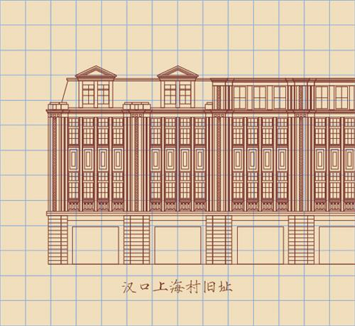

所在街区：江岸区胜利街 建筑风格：晚期古典主义 建造年代：1921年 现存情况：交通银行

汉口交通银行旧址位于武汉市江岸区胜利街。建于1921年，四层钢筋混凝土结构，建筑面积3500平方米。属西方古典主义建筑风格。构图手法采用传统的"三段式"，正立面的4根廊柱，严格遵从西方古典柱式比例，使得整幢建筑格外庄重雄伟。该建筑曾是原汉口租界区内的重要景观，具有较高的建筑艺术价值。
汉口交行大楼为英商景明洋行的翰明斯设计，风格为晚期古典主义。四层钢筋混凝土结构，占地1500平方米，建筑面积3500多平方米。采用古典三段式：基座，柱廊，檐以及玻璃顶楼。外墙花岗石到顶，四根花岗石古希腊式爱奥尼立柱直达三层楼顶，高14米，直径1.3米。1933年在南京建成的交通银行，门廊立柱高9米，当时已属"非常宏伟"；而汉口的交通银行廊柱超高其5米，可以称之为"宏伟之极"了。